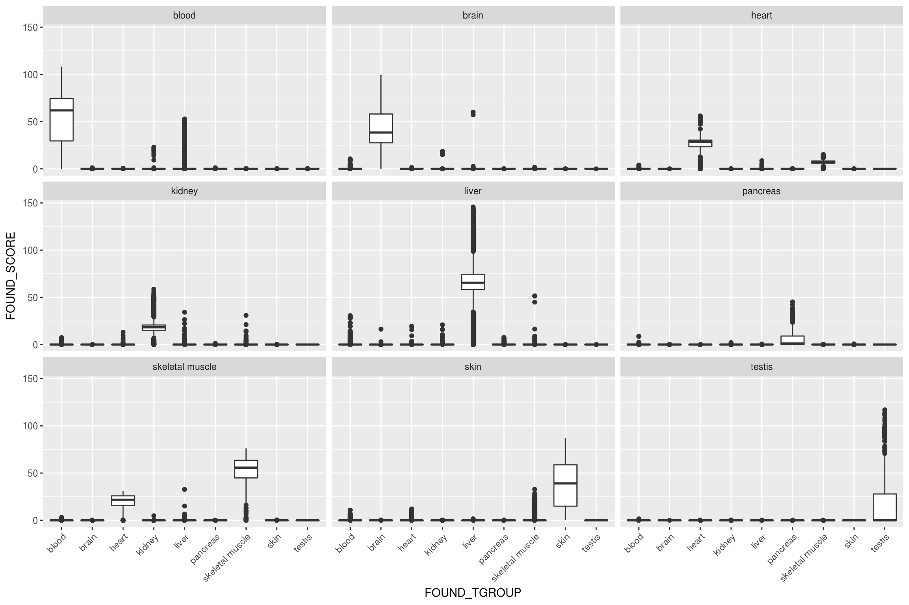
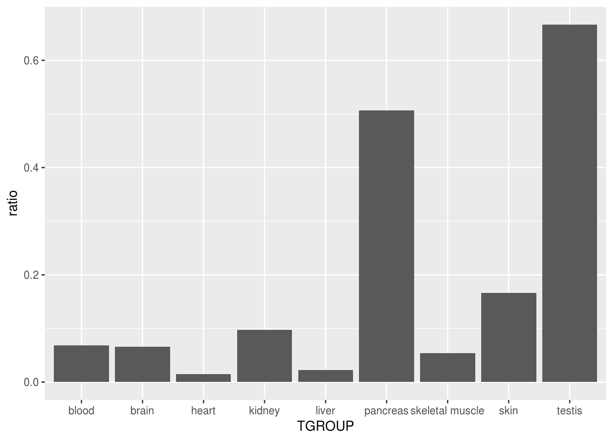
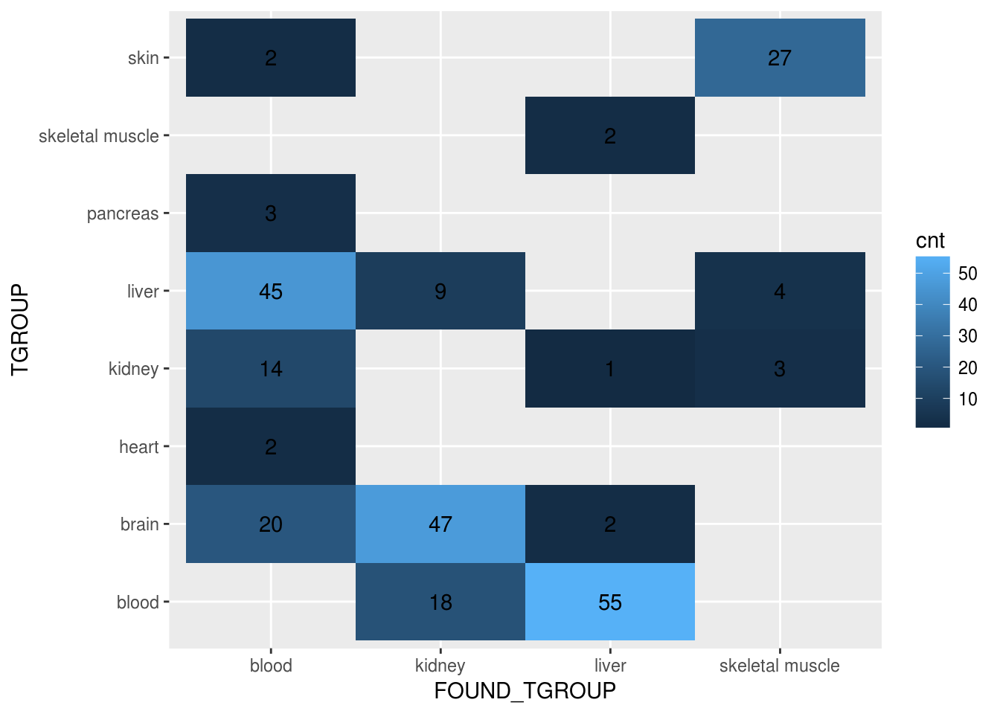
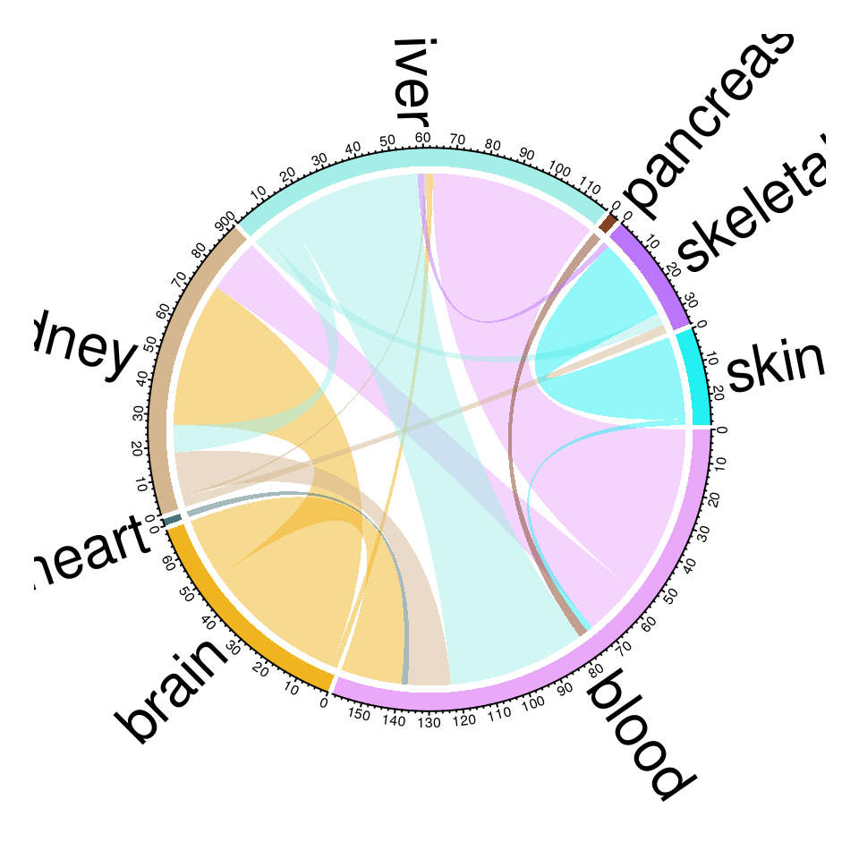
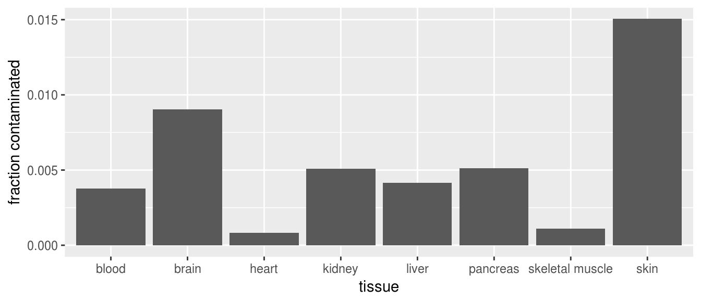
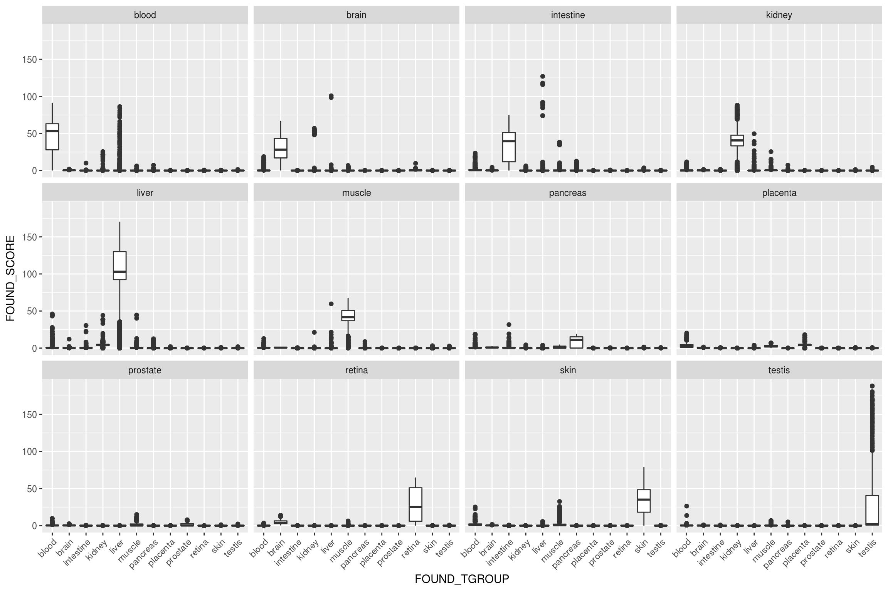
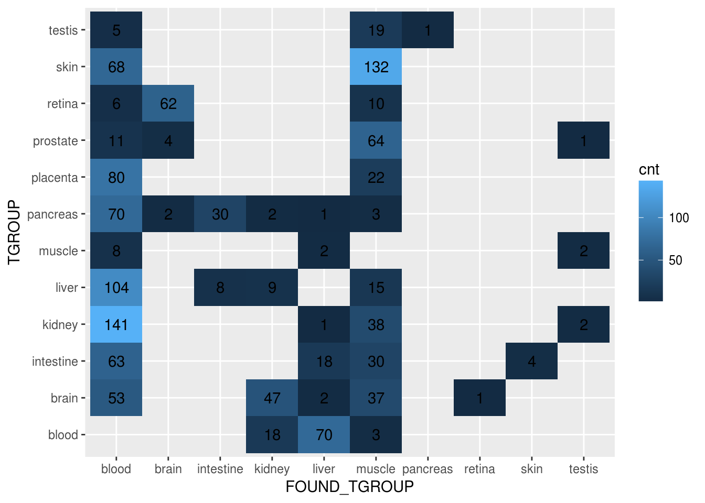

7 Results
sql = "
select /*+ parallel(16) */ *
from bioqc_contamination
where tissue_set = 'gtex_solid'
"
res = data.table(dbGetQuery(mydb, sql))
res = res[,MIN_FOUND_PVALUE:=as.numeric(MIN_FOUND_PVALUE)]
res = res[,MIN_EXP_PVALUE:=as.numeric(MIN_EXP_PVALUE)]
res = res[,EXP_SCORE:=absLog10p(MIN_EXP_PVALUE)]
res = res[,FOUND_SCORE:=absLog10p(MIN_FOUND_PVALUE)]
res = res[,total_tissue:=length(unique(GSM)), by=c("TGROUP")]
#res[,cnt_per_group:=length(unique(GSM)), by=c("GPL", "TGROUP")]
#res = res[cnt_per_group >= 100]
pbonf = 0.05 / nrow(res)7.1 Detection of tissues
In general, a signature finds its corresponding tissue:
ggplot(res, aes(x=FOUND_TGROUP, y=FOUND_SCORE)) +
geom_boxplot() + facet_wrap(~TGROUP) +
theme(axis.text.x=element_text(angle = 45, hjust = 1))
Although, for each tissue there are samples in which the signature is not enriched (pvalue >= 0.05) at a single sample level:
matching = res[TGROUP == FOUND_TGROUP]
not_enriched = data.table(sqldf("select tgroup
, sum(case when MIN_FOUND_PVALUE >= 0.05 then 1 else 0 end) as not_enriched
, count(distinct gsm) as total
from matching
group by tgroup"))## Loading required package: tcltk## Warning: Quoted identifiers should have class SQL, use DBI::SQL() if the
## caller performs the quoting.not_enriched[, ratio:=not_enriched/total]## TGROUP not_enriched total ratio
## 1: blood 1331 19393 0.06863301
## 2: brain 504 7624 0.06610703
## 3: heart 36 2402 0.01498751
## 4: kidney 345 3540 0.09745763
## 5: liver 315 14019 0.02246951
## 6: pancreas 297 586 0.50682594
## 7: skeletal muscle 98 1830 0.05355191
## 8: skin 321 1927 0.16658018
## 9: testis 418 627 0.66666667ggplot(not_enriched, aes(x=TGROUP, y=ratio)) + geom_bar(stat="identity")
And, there are outliers (=tissue heterogeniety).
7.2 Detection of outliers
7.2.1 Sample-against-sample method
- it is not a valid approach to compare samples against other samples. Even if stratified by platform, different experimental conditions and data processing steps could influence the BioQC score in a way that it would fall outside a confidence interval.
- taking (1) into account we could detect outliers at a study level. This can be trivially done by computing a z-score on the BioQC scores. The statistically correct approach to check if a signature is more enriched in one sample than another would be as follows:
For two samples \(S_1\) and \(S_2\) and a signature \(K\): \[ H_0: \text{genes in K are not more enriched in } S_1 \text{ than in } S_2 \\ H_1: \text{genes in K are more enriched in } S_1 \text{ than in } S_2 \] which translates in the context of the WMW test into \[ H_1: \text{The median rank of signature genes in } S_1 \text{ is higher than the median rank of signature genes } S_2 \]
Let \(U_1\) and \(U_2\) be the WMW test statistics for \(S_1\) and \(S_2\) respectively, with
\[ U_1 \sim \mathcal{N}(\mu_1, \sigma_1^2) \\ U_2 \sim \mathcal{N}(\mu_2, \sigma_2^2) \]
We define the random variable \[ \Delta = U_1 - U_2 \]
Which is distributed, assuming independence of the two samples, according to \[ \Delta \sim \mathcal{N}(\mu_1 - \mu_2, \sigma_1^2 - \sigma_2^2). \]
So that we now can easily test our hypothesis: \[ H_1: \Delta > 0. \]
7.2.2 Within-Sample Method
Another approach is to check, which signature scores highest in a sample. Like that we classify a sample based on the signature, independent of the original annotation. As shown in the signature validation this works reliably with a sensitivity and specificity of 1.0 for the selected subset of signatures. Acknowledging that we have tested the signatures only on a small set of samples, we can add an additional safety margin, by requiring that the p-value exceeds the p-value of the ‘expected signature’ at least by 2 orders of magnitude.
The downside of this approach is, that it will only detect heavily contaminated or mislabeled samples. Also, some signatures have a higher score than others in general, which further limits our detection limit. For instance, it will be relatively easy to detect liver contamination in pancreas, while it is hard to detect pancreas contamination in liver.
We filter the results according to this criterion:
res = res[,score_ratio:=FOUND_SCORE - EXP_SCORE]
fil = res[TGROUP != FOUND_TGROUP & score_ratio > 2]
#### exclude 'double contaminations'
fil = fil[, rk:=frankv(FOUND_SCORE, order=-1), by=c("GSM", "GPL", "TGROUP")]
fil = fil[rk==1]And display the ‘contamination matrix’
aggr = sqldf('select TGROUP, FOUND_TGROUP, count(GSM) as cnt from fil group by TGROUP, FOUND_TGROUP')
ggplot(aggr, aes(y=TGROUP, x=FOUND_TGROUP)) +
geom_tile(aes(fill=cnt)) +
geom_text(aes(label=cnt))
The same can be visualized as ‘migration chart’
set.seed(42)
col = rand_color(length(unique(aggr$TGROUP)))
names(col) = unique(aggr$TGROUP)
chordDiagram(aggr, grid.col=col, annotationTrack="grid", preAllocateTracks=1)
circos.trackPlotRegion(track.index=1, panel.fun = function(x, y) {
xlim = get.cell.meta.data("xlim")
ylim = get.cell.meta.data("ylim")
sector.name = get.cell.meta.data("sector.index")
circos.text(mean(xlim), ylim[1] + .1, sector.name, facing = "clockwise", niceFacing = TRUE, adj = c(0, 0.5), cex=2)
circos.axis(h = "top", labels.cex = 0.5, major.tick.percentage = 0.2, sector.index = sector.name, track.index = 2)
}, bg.border = NA)
The fraction of contaminated samples per tissue:
per_tissue = sqldf("select tgroup
, total_tissue as TOTAL
, count(gsm) as CONTAMINATED
, count(gsm)/cast(total_tissue as float) as RATIO
from fil group by tgroup")
# png(filename = "contamination.png", width = 1200, height=600)
ggplot(data=per_tissue, aes(x=TGROUP, y=RATIO)) +
geom_bar(stat="identity") +
xlab("tissue") +
ylab("fraction contaminated")
These are actually so few examples, that we can have a look at them manually:
sql = "
select * from bioqc_gse_gsm
"
all_gse = data.table(dbGetQuery(mydb, sql))
setkey(all_gse, GSM)
contam_studies = merge(fil, all_gse, all=FALSE, by=c("GSM"))
datatable(sqldf("select GSE, GSM, GPL, TGROUP, FOUND_TGROUP, ORGANISM, EXP_SCORE, FOUND_SCORE, score_ratio
from contam_studies
order by gse asc, score_ratio desc"))7.2.3 Using the bioqc_solid signature set
We can re-run the above analysis with the signatures provided by the BioQC authors. These signatures are not as toroughly validated as the ‘gtex solid’ set used above. Nonetheless it is interesting (1) to compare the results and (2) to take additional tissues into account.
sql = "
select /*+ parallel(16) */ *
from bioqc_contamination
where tissue_set = 'bioqc_solid'
"
res_bqc = data.table(dbGetQuery(mydb, sql))
res_bqc = res_bqc[,MIN_FOUND_PVALUE:=as.numeric(MIN_FOUND_PVALUE)]
res_bqc = res_bqc[,MIN_EXP_PVALUE:=as.numeric(MIN_EXP_PVALUE)]
res_bqc = res_bqc[,EXP_SCORE:=absLog10p(MIN_EXP_PVALUE)]
res_bqc = res_bqc[,FOUND_SCORE:=absLog10p(MIN_FOUND_PVALUE)]
res_bqc = res_bqc[,total_tissue:=length(unique(GSM)), by=c("TGROUP")]
#res[,cnt_per_group:=length(unique(GSM)), by=c("GPL", "TGROUP")]
#res = res[cnt_per_group >= 100]
pbonf_bqc = 0.05 / nrow(res_bqc)Again, we note that the signatures in general are highly specific.
ggplot(res_bqc, aes(x=FOUND_TGROUP, y=FOUND_SCORE)) +
geom_boxplot() + facet_wrap(~TGROUP) +
theme(axis.text.x=element_text(angle = 45, hjust = 1))
We filter the results according to the cutoff
res_bqc = res_bqc[,score_ratio:=FOUND_SCORE - EXP_SCORE]
fil_bqc = res_bqc[TGROUP != FOUND_TGROUP & score_ratio > 2]
#### exclude 'double contaminations'
fil_bqc = fil_bqc[, rk:=frankv(FOUND_SCORE, order=-1), by=c("GSM", "GPL", "TGROUP")]
fil_bqc = fil_bqc[rk==1]and display the ‘contamination matrix’
aggr = sqldf('select TGROUP, FOUND_TGROUP, count(GSM) as cnt from fil_bqc group by TGROUP, FOUND_TGROUP')
ggplot(aggr, aes(y=TGROUP, x=FOUND_TGROUP)) +
geom_tile(aes(fill=cnt)) +
geom_text(aes(label=cnt))
Investigtation why this approach shows many more hits for blood and muscle contamination has shown that the positive hits are mainly due to single-cell blood signatures (e.g. Monocytes) and the ‘smooth muscle’ muscle signature which has not been profiled in the gtex dataset (data not shown).
7.3 signature-free method?
To find more subtle contamination, we could conduct an exemplary study searching for pancreas contamination in kidney. This is a likely contamination in mouse due to the spatial spatial closeness of the organs, as already noted by the BioQC authors. We could do so by assessing the abundance of the Elastase and Amylase genes which are only expressed in pancreas.